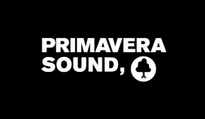
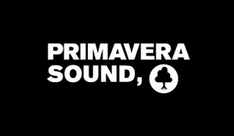

AHEAD IN URBAN CULTURE
AND SOCIAL COMPROMISE
AND SOCIAL COMPROMISE

Social Beats is a non-profit-making project, born and raised in Barcelona thanks to the collaboration between social and cultural entities.
Social Beats es un proyecto sin ánimo de lucro fecundado, nacido y crecido en Barcelona gracias a la colaboración entre entidades sociales y culturales.

 
